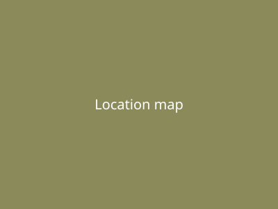

People & Contact
Director
The lab is run by a director along with a handful of student staff who cover the floor hours.
Contact Info
Email: btulab@colorado.eduPhone: (303) 492-7465
Location

Down in the basement of the ATLAS Institute building, on the CU Boulder campus.